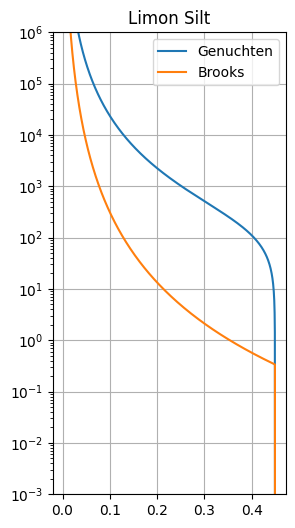

Soil Parameter Datasets¶
Martin Vonk (2025)
Generally either the Brooks-Corey or Mualem-van Genuchten soil models are used. Pedon has some built-in datasets with parameter sets that can be used for both soil models.
[1]:
import pedon as pe
[2]:
# list all soil types for van genuchten
pe.Soil.list_names(pe.Genuchten)
[2]:
['Sand',
'Loamy Sand',
'Sandy Loam',
'Loam',
'Silt',
'Silt Loam',
'Sandy Clay Loam',
'Clay Loam',
'Silty Clay Loam',
'Sandy Clay',
'Silty Clay',
'Clay',
'B01',
'B02',
'B03',
'B04',
'B05',
'B06',
'B07',
'B08',
'B09',
'B10',
'B11',
'B12',
'B13',
'B14',
'B15',
'B16',
'B17',
'B18',
'O01',
'O02',
'O03',
'O04',
'O05',
'O06',
'O07',
'O08',
'O09',
'O10',
'O11',
'O12',
'O13',
'O14',
'O15',
'O16',
'O17',
'O18',
'Medium Sand',
'Del Monte Sand',
'Fresno Medium Sand',
'Unconsolidated Sand',
'Fine Sand',
'Columbia Sandy Loam',
'Touchet Silt Loam',
'Hygiene Sandstone',
'Adelanto Loam',
'Limon Silt',
'Yolo Light Clay']
[3]:
# get the HYDRUS sand
soil = pe.Soil(
name="Sand",
).from_name(sm=pe.Genuchten, source="HYDRUS")
soil
[3]:
Soil(name='Sand', model=Genuchten(k_s=712.8, theta_r=0.045, theta_s=0.43, alpha=0.145, n=2.68, l=0.5), sample=None, source='HYDRUS', description='Sand')
Note that we now have a different class; the soil class. This class has some other attributes such as the name. If the name is in the dataset (pe.Soil.list_names(pe.Genuchten)), the from_name() can retrieve the soil model. Note that we have to parse the soil model sm as an attribute since some soil models are available both as a Genuchten and Brooks dataset.
[4]:
# get from the Staring series
pe.Soil("O18").from_staring(year="2001")
[4]:
Soil(name='O18', model=Genuchten(k_s=35.95, theta_r=0.01, theta_s=0.58, alpha=0.0127, n=1.32, l=-0.786), sample=SoilSample(sand_p=None, silt_p=np.float64(0.0), clay_p=np.float64(0.0), rho=np.float64(1.1), th33=None, th1500=None, om_p=np.float64(22.5), m50=np.float64(nan), d10=None, d20=None), source='Staring_2001', description='moerige tussenlaag')
[5]:
# get for both genuchten and brooks
ls_gen = pe.Soil("Limon Silt").from_name(sm=pe.Genuchten)
ls_bro = pe.Soil("Limon Silt").from_name(sm=pe.Brooks)
ax = ls_gen.model.plot()
ls_bro.model.plot(ax=ax)
ax.legend()
ax.set_title(ls_gen.name)
[5]:
Text(0.5, 1.0, 'Limon Silt')
